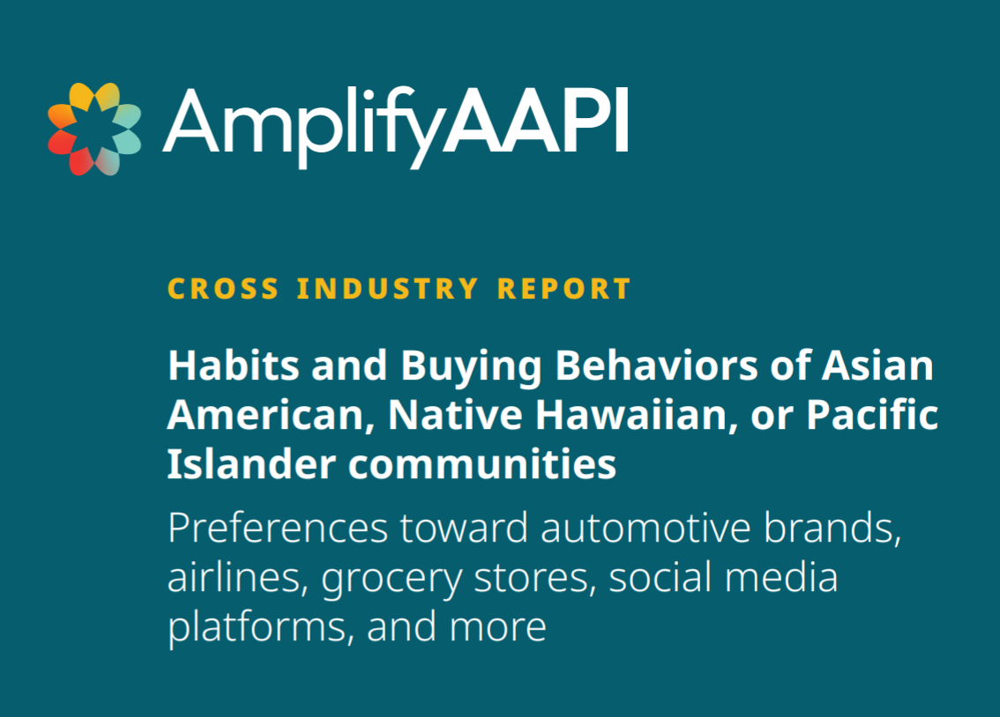
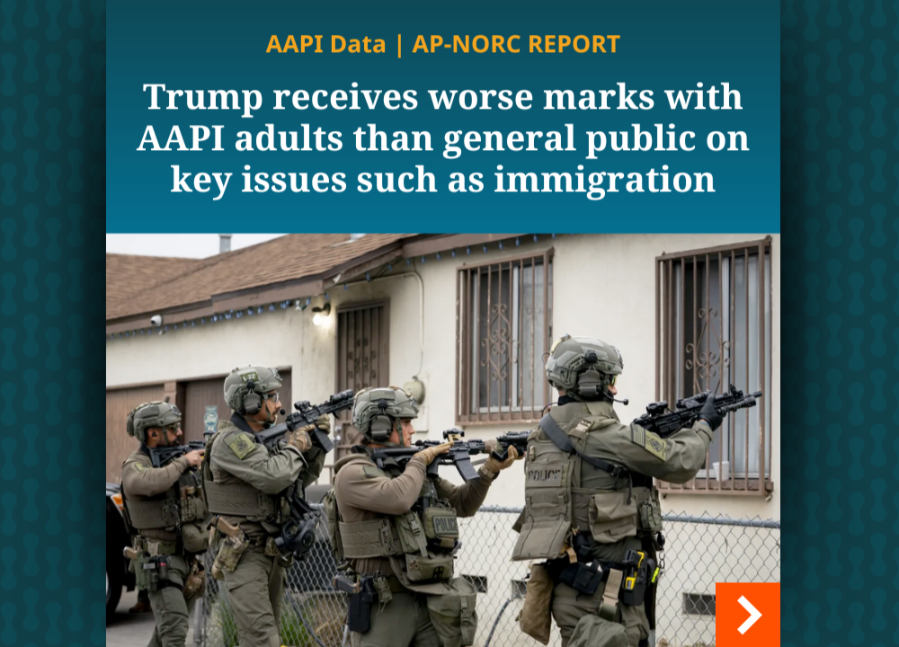
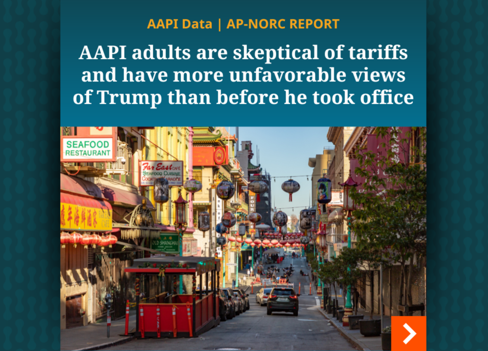
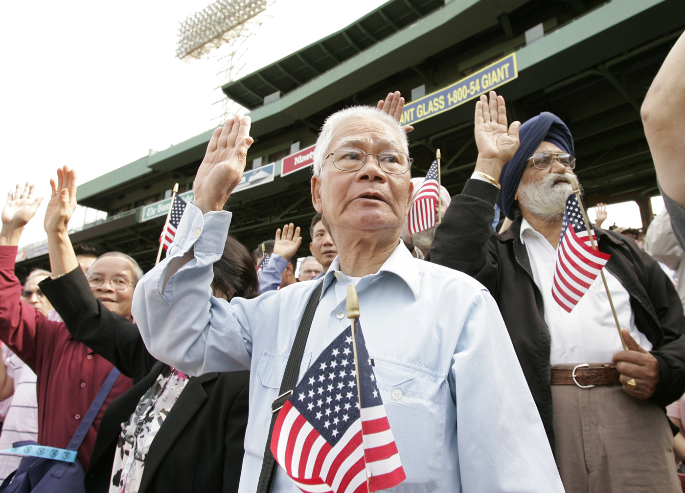
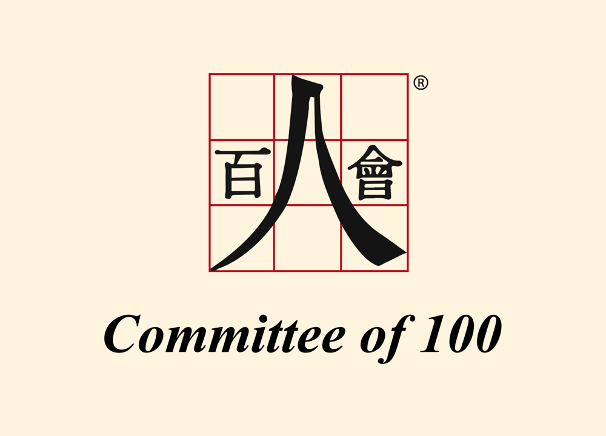
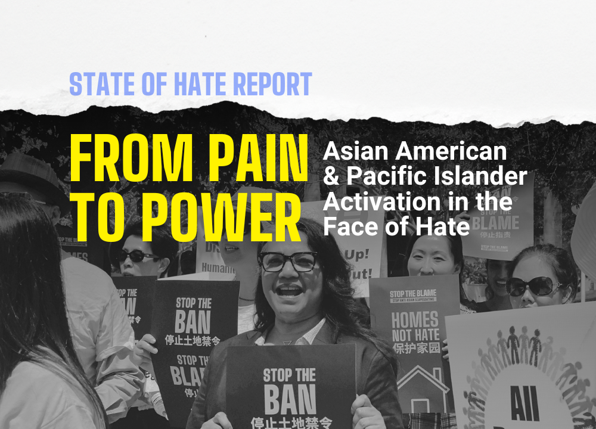
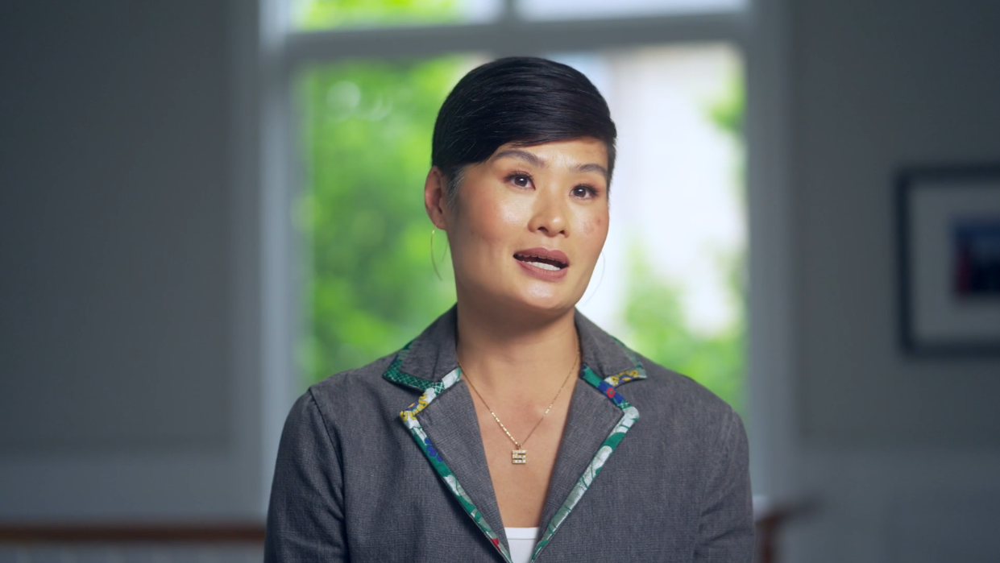

The Trusted Solution for Illuminating AANHPI Stories
Amplify AAPI® provides trustworthy data on the needs, opinions, and experiences of the Asian American, Native Hawaiian, and Pacific Islander population.

Amplify AAPI Cross Industry Report
Habits and buying behaviors of Asian Americans, Native Hawaiian, or Pacific Islander communities.

AAPI Data | AP-NORC Survey September/October 2025
Trump receives worse marks with AAPI adults than general public on key issues.

AAPI Data | AP-NORC Survey June/July 2025
AAPI adults are skeptical of tariffs and have more unfavorable views of Trump than before he took office.

AAPI Data AP-NORC
A series of monthly polls, delivering regular insights on crucial issues, ranging from policy priorities and financial well-being to political views and civic engagement.

State of Chinese Americans Survey 2024
A survey done in partnership with Committee of 100 focused on the current politics and policy needs of the Chinese American population.

The State of Anti-AA/PI Hate
This report, done in partnership with Stop AAPI Hate, offers a comprehensive picture of the state of anti-Asian American and anti-Pacific Islander (anti-AA/PI) hate in 2023.
A Growing & Varied Population
AANHPI communities are the fastest-growing minority in the United States.
AANHPI Leaders Share the Impact

Stephanie Morimoto, Owner & CEO of Asutra
Video
“We all just want to feel like we belong,” says Stephanie Morimoto. Stephanie is the owner and CEO of Asutra, a health and wellness company. Here, she discusses how a research panel like Amplify AAPI can lead to greater AANHPI representation.
Kevin Pang, Editorial Director at America's Test Kitchen
Video
“This is the next step toward understanding,” says Kevin Pang. Kevin is a writer, documentary filmmaker, and the editorial director for digital at America's Test Kitchen on PBS. Here, he shares that rich data can lead to deeper understanding of AANHPI communities.
Nancy Chen, President of Chinese American Women in Action
Video
“We need data so we can help those who need our help,” says Nancy Chen. Nancy is a founding president of Chinese American Women in Action, a nonprofit dedicated to empowering Chinese American women through education, advocacy, networking, and mentoring.
Founded by NORC with the Support of AARP
AARP is a founding partner in the conception, design, and development of Amplify AAPI, providing both thought leadership, community expertise, and financial support.